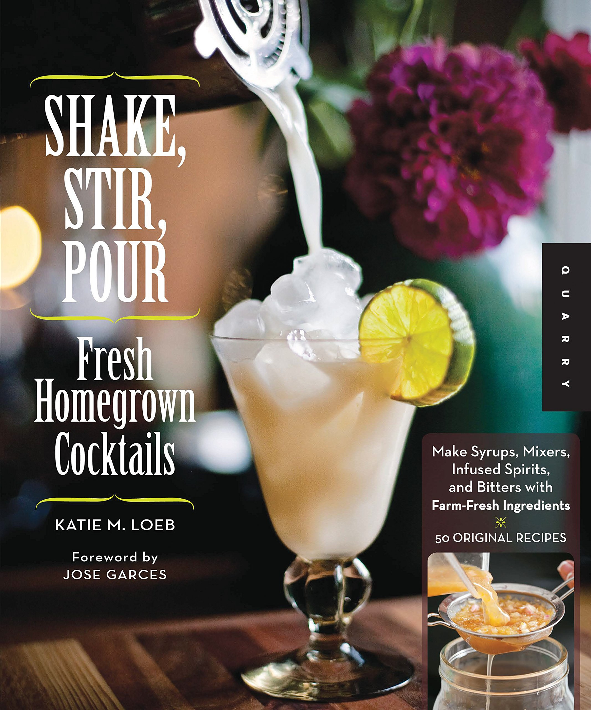
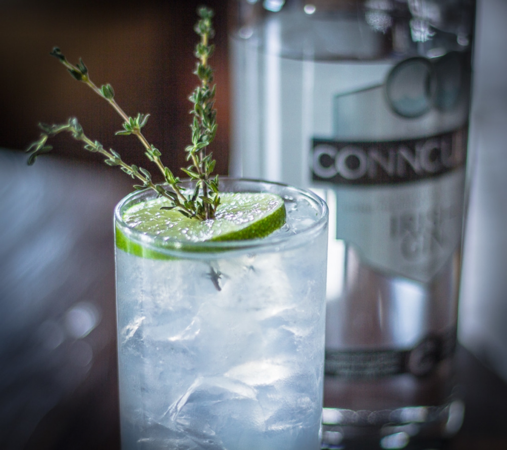

Katie Loeb, 57, cocktail pioneer
Teaneck native Katie Loeb, the ‘matriarch of the Philly foodie scene,’ has entered hospice
(Photo: Steve Legato)
Katie Loeb, Godmother of Philly’s Cocktail Scene, Is in Hospice Care
Restaurant community remembering Katie Loeb
Philly’s restaurant community toasts cocktail maven Katie Loeb
The 57-year-old Penn grad helped usher in the city’s modern food boom.


Shake, Stir, Pour — Fresh Homegrown Cocktails: Make Syrups, Mixers, Infused Spirits, and Bitters with Farm-Fresh Ingredients — 50 Original Recipes
Available on
Amazon,
Barnes & Noble,
Google Play Books
More info:
Goodreads,
Kobo,
Healthy Slow Cooking
Katie is #6 – Conncullin Gin + Fever Tree Mediterranean Tonic
13 Delicious Gin and Tonics to Try Right Now

This Mediterranean Gin & Tonic appropriately matches Fever Tree’s Mediterranean Tonic with Conncullin gin, adding more herbality with the addition of fresh thyme. “I paired the Conncullin gin with that tonic because it’s very herbaceous, which pairs beautifully with the berry botanicals of the gin,” says Katie M. Loeb, a Philadelphia-based mixologist. “The garnish is so you can smell the thyme as you raise the glass toward your nose. It’s super refreshing and a burst of fresh springtime scents and flavors.”
Katie Loeb, speaking to Jake Emen of Maxim